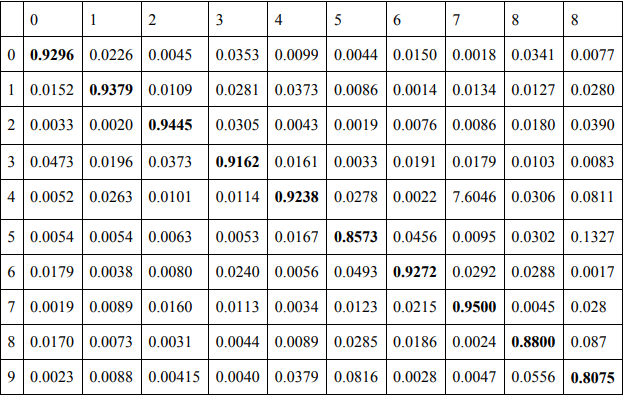
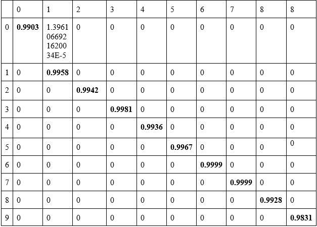

Numeric Character Recogniction Learning is a application written for the bachelor's thesis. I used Java, Maven, and the Neurph library to create the program.The application is used to learn the recognition of numeric symbols using a neural network based on data from a file (learning data was generated using the "Generator Binary Digital" application).The result of running the application is the result of learning the neural network for each digit from the range 0-9. The table below shows the result of the mean of the 10 launches of the application with 43 neurons hidden layer, the results are given with an accuracy of 4 decimal places. Average total the result of recognizing 10 digits using the application is 90% (0.9074).
The result was improved by increasing the number of neurons hidden from 43 to 2000 what resulted in achieving the result of 99% recognition of each digit. The result is an average from 10 application launches. The table below presents detailed results. Values close zeros have been turned to zero due to the clarity of the results presented, only in column [0,1] the actual result was presented.
